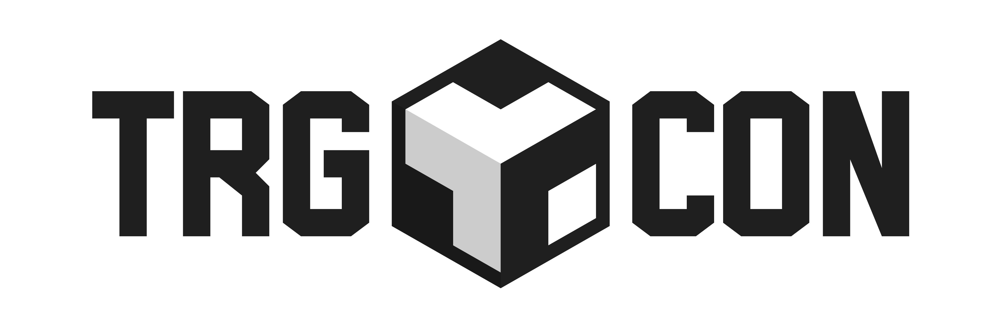

TRG23 o cómo hacer comunidadTRG23, or how to build community

Este fin de semana asistí a mi cuarta Tarugoconf/TRG. Con 2 online y 2 presenciales, igualé las veces que me quedé con las ganas con las veces que me lancé sin pensar, confirmando que la vida recompensa a los que se atreven.
Siendo honestos, reconozco que no sé si habré llegado a exprimir el 50% de todo lo que ofrece esta conferencia. La fecha me pilló sobrecargado de trabajo, con un cierto desgaste social y otros compromisos personales por los que no pude sacar tiempo para la plataforma online, ni asistir el día de talleres, ni al Community Day. Pero aún así, compensó un 200%.
Incluso mientras iba el viernes a La Nave, pensaba que lo que debería estar haciendo era quedarme en casa y estar con mi familia, comprendiendo que por mucho que ames tu profesión siempre habrá momentos de tensión con tu vida personal y que para todo hay fases y momentos. Pero nada más llegar a la entrada me di cuenta de que, de cierta manera, allí también estaba en casa.
¿Qué es la TRG?
Es difícil expresar qué es la TRG de forma que realmente se comprenda lo que supone para los asistentes. Si nos quedamos en lo objetivo parece sencillo, un evento tecnológico con un track, ocho charlas, ratos de networking y comida. Pero para el que haya tenido la oportunidad de vivirlo, sabe de sobra que esta conferencia es mucho más que Tecnología, Relaciones y Gastronomía.
Es un evento cuidado al detalle que rezuma cariño mires por donde mires. Ocho charlas impresionantes, que o bien te abren la mente o directamente te la explotan, y un entorno donde reencontrarte con amigos, compañeros, referentes y desconocidos en un ambiente tan acogedor que es imposible no sentirse a gusto.
Disfruté enormemente de cada charla. No puedo poner ni un pero a ninguna. Chema Alonso, referente nacional, tan cercano hablando de IA y LLMs. Sandra Hernandez, con 26 años, demostrando que se puede llegar a la NASA con esfuerzo y determinación. Sergio Rodríguez trayendo la velocidad de la F1 al procesado de datos. Isa Gárate recordando una vez más que el secreto de un buen producto es tan simple y tan difícil como empatizar, comunicarse y entenderse. Débora Franco mostrando cómo la tecnología llega a lugares tan recónditos como una viña. Antonio Alcaide enseñando como hasta el negocio más tradicional debe saber reinventarse e innovar para asegurar el futuro. Pablo Santos dando una lección de humildad y con una sinceridad dolorosa explicando como hasta la venta más exitosa puede sentirse un fracaso cuando no manejas las expectativas y te adaptas. Y por último, David Bonilla, continuando siendo ejemplo de transparencia con los datos de la conferencia, y esta vez cerrando con un mensaje de optimismo, habrá TRG24 y por mi parte tengo claro que volveremos a vernos el año que viene.
Qué decir sobre el networking. Disfruté más del doble de lo que hubiera podido imaginar y aún así no llegué a la mitad de lo que me hubiera gustado exprimirlo. Pude reencontrarme con antiguos compañeros y amigos a los que echaba mucho de menos. Intercambiar algunas palabras con personas que admiro profundamente. Desvirtualizar y conocer a personas maravillosas. Y con todo, me quedé con ganas de compartir un rato con mucha gente más.
Y es que por mucho que sea un evento fantástico, el mayor valor de la TRG son sus personas. La TRG es, más que cualquier otra cosa, COMUNIDAD con mayúsculas.
¿Qué es comunidad?
Por mucho que te guste tú trabajo y estés en la mejor empresa del mundo, el día a día puede hacerse algo solitario. Es difícil poder compartir con completa libertad tus inquietudes y aspiraciones con tus compañeros de trabajo y la visión que tienes dentro de una empresa es muy limitada. Es muy difícil no sentirte solo y abrumado en una tarea tan importante como es guiar tu carrera profesional.
Y ahí es donde entra la comunidad. La comunidad es encontrar personas que comparten tus mismas inquietudes, aspiraciones y pasiones. Personas que te muestran todo lo que es posible, muchas cosas de las cuales ni pudiste imaginar. Que te desafían con otras experiencias y realidades a salir de tu burbuja. Que te abren la mente. Que te comprenden cuando crees que eres el único que está pasando por esa situación o que estás sintiendo aquello. Que te acompañan cuando te sientes solo. Que te sostienen cuando las cosas no van bien. Y que siempre están dispuestas a escuchar y echar una mano.
Una comunidad es aquella que te demuestra que no tienes porque venderte, sólo mostrarte como eres, como descubrí el año pasado en esta misma conferencia.
Y entre todas las comunidades, con total sinceridad, me parece difícil encontrar una mejor que la que forma la TRG.
Aprendizajes
La TRG nos ha enseñado que la IA, por mucho avance que haya dado e increíble que parezca, de momento sólo va a reemplazar lanzar una moneda al aire. Que es posible trabajar en la Nasa o en la F1. Que la tecnología puede servir para arreglar dientes, hacer cañas, cuidar viñas o incluso salvar vidas. Que se puede aprender a navegar la complejidad y la incertidumbre cada vez más presente en este mundo. Que a emprender se puede empezar comiendo hamburguesas. Que seas de ventas, producto o desarrollo, la clave está en saber comunicarte y entenderte con personas que piensan y hacen cosas diferentes a ti. Que puedes sentirte fracasar y aprender incluso construyendo un producto increíble y vendiéndolo a una gran empresa. Y eso sólo mencionando unos pocos ejemplos.
Nos ha enseñado que, por mucho que digan lo contrario, es una buena idea rodearte de amigos y familiares para montar un evento, y de hecho es sinónimo de éxito. Que los referentes son más cercanos de lo que parecen y que tienes mucho que ganar por atreverte a acercarte a ellos. Que se pueden viajar cientos de kilómetros para rodearte de desconocidos y sentirte como en casa. Y que por mucho que consigas hacer el mejor evento del mundo, lo más importante siempre serán las personas.
Si algo nos ha enseñado David Bonilla es que hacer el tarugo compensa. Que un email puede ser el comienzo de algo maravilloso. Y, yo al menos, por ello le estaré enormemente agradecido.
Conclusión
La TRG se ha convertido para mí en uno de los momentos del año y es por eso que, aún recién acabada, no puedo dejar de pensar en el año que viene.
Nos volveremos a ver, seguiré aprendiendo, disfrutando y formando una pequeña parte de esta comunidad tan maravillosa que habéis construido.
¡Un millón de gracias a todos aquellos que la hacéis posible y hasta el año que viene!
This weekend I attended my fourth Tarugoconf/TRG. With 2 online and 2 in person, I matched the number of times I missed out with the number of times I just dove in without thinking, confirming that life rewards those who dare.
To be honest, I admit I don't know whether I managed to squeeze even 50% out of everything this conference has to offer. The date caught me overloaded with work, somewhat socially worn out, and with other personal commitments that left me no time for the online platform, nor to attend the workshop day, nor the Community Day. But even so, it more than paid off—200%.
Even as I headed to La Nave on Friday, I kept thinking that what I should really be doing was staying home with my family, understanding that no matter how much you love your profession there will always be moments of tension with your personal life, and that everything has its phases and its moments. But the instant I reached the entrance I realized that, in a certain way, I was home there too.
What is the TRG?
It's hard to put into words what the TRG is in a way that truly conveys what it means to those who attend. If we stick to the objective facts, it seems simple—a tech event with a single track, eight talks, networking time and food. But anyone who has had the chance to live it knows full well that this conference is far more than Technology, Relationships and Gastronomy.
It's an event crafted down to the smallest detail, oozing care wherever you look. Eight stunning talks that either open your mind or flat-out blow it, and a setting where you reconnect with friends, colleagues, role models and strangers in an atmosphere so welcoming that it's impossible not to feel at ease.
I thoroughly enjoyed every single talk. I can't fault a single one. Chema Alonso, a national reference, so down to earth talking about AI and LLMs. Sandra Hernandez, at 26, proving that you can make it to NASA with effort and determination. Sergio Rodríguez bringing the speed of F1 to data processing. Isa Gárate reminding us once again that the secret to a good product is as simple and as hard as empathizing, communicating and understanding one another. Débora Franco showing how technology reaches places as remote as a vineyard. Antonio Alcaide teaching us how even the most traditional business must know how to reinvent itself and innovate to secure its future. Pablo Santos giving a lesson in humility and, with painful honesty, explaining how even the most successful sale can feel like a failure when you don't manage expectations and adapt. And finally, David Bonilla, continuing to be an example of transparency with the conference's numbers, this time closing with a message of optimism—there will be a TRG24, and for my part I'm certain we'll see each other again next year.
What can I say about the networking. I enjoyed it more than twice as much as I could have imagined, and even so I didn't get to half of what I would have liked to make of it. I got to reconnect with old colleagues and friends I'd missed dearly. To exchange a few words with people I deeply admire. To put faces to names and meet wonderful people. And through it all, I was left wishing I could have shared time with many more.
Because as fantastic an event as it is, the TRG's greatest value is its people. More than anything else, the TRG is COMMUNITY in capital letters.
What is community?
No matter how much you love your job and how great the company you're in is, the day to day can get a bit lonely. It's hard to share your concerns and aspirations with complete freedom with your coworkers, and the view you have from inside a company is very limited. It's very hard not to feel alone and overwhelmed in something as important as steering your own professional career.
And that's where community comes in. Community is finding people who share your same concerns, aspirations and passions. People who show you everything that's possible, much of which you couldn't even have imagined. Who challenge you with other experiences and realities to step out of your bubble. Who open your mind. Who understand you when you think you're the only one going through that situation or feeling that way. Who keep you company when you feel alone. Who hold you up when things aren't going well. And who are always willing to listen and lend a hand.
A community is one that shows you that you don't have to sell yourself, just show yourself as you are, as I discovered last year at this very conference.
And among all the communities, in all honesty, I find it hard to think of a better one than the one the TRG forms.
Takeaways
The TRG has taught us that AI, for all the progress it's made and as incredible as it seems, is for now only going to replace flipping a coin. That it's possible to work at NASA or in F1. That technology can be used to fix teeth, pour beers, tend vineyards or even save lives. That you can learn to navigate the complexity and uncertainty that are ever more present in this world. That entrepreneurship can start by eating hamburgers. That whether you're in sales, product or development, the key lies in knowing how to communicate and understand one another with people who think and do things differently from you. That you can feel like you're failing and still learn, even while building an incredible product and selling it to a big company. And that's just mentioning a few examples.
It has taught us that, no matter what others say, surrounding yourself with friends and family to put on an event is a good idea—and is in fact synonymous with success. That role models are more approachable than they seem and that you have a lot to gain by daring to reach out to them. That you can travel hundreds of kilometers to surround yourself with strangers and feel at home. And that no matter how well you manage to pull off the best event in the world, the most important thing will always be the people.
If David Bonilla has taught us anything, it's that being a tarugo pays off. That an email can be the beginning of something wonderful. And, for that, I at least will be enormously grateful to him.
Conclusion
The TRG has become one of the highlights of my year, and that's why, even though it's just ended, I can't stop thinking about next year.
We'll see each other again, I'll keep learning, enjoying, and being a small part of this wonderful community you've built.
A million thanks to all of you who make it possible, and see you next year!